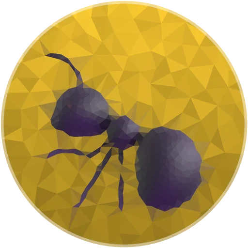
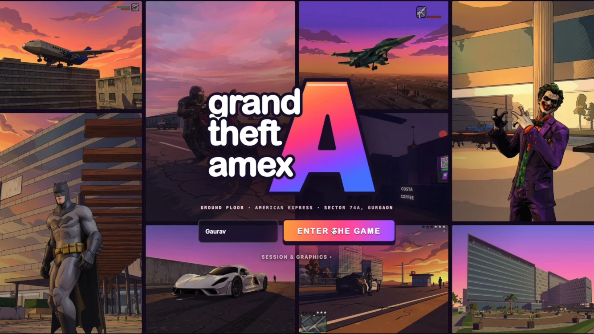
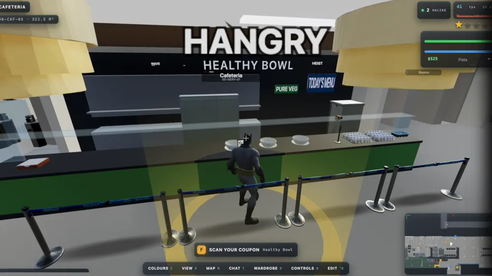
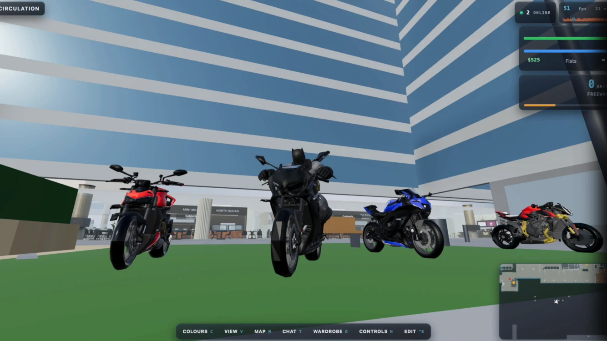
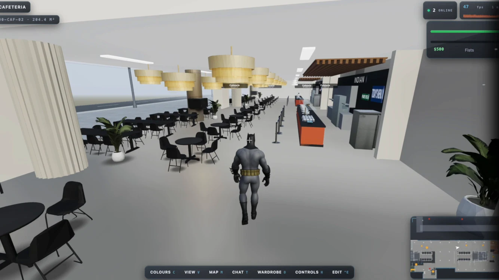
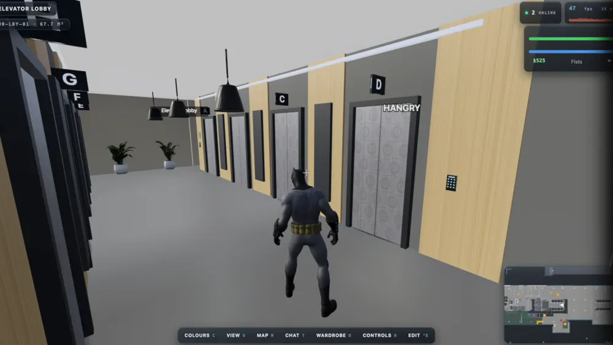

Live on Telegram · @Apexleo_bot
Meet APEX.
My 24×7 personal AI assistant on Telegram, run by a team of AI agents.
by Gaurav Yadav · Runs on Hermes Agent better version of Openclaw
The frontend · Telegram
Six jobs, one chat.
Hover a job — the chat jumps to it. Otherwise it plays the day through.
The setup
From an easy start to a genuinely useful assistant
Five steps. Each one adds a part.
How they work together
The Journey Flow
- You make a request, a goal in natural language.
- Soul, the core engine (LLM), interprets context and plans.
- Skills are special-purpose agent capabilities.
- Scripts handle non-AI automated tasks and schedules.

ScriptsCOLONYFeature · MISO · recipe + cart
Sunday recipe → grocery cart
Guardrail. AI never checks out. I review the cart and pay myself.
Gotcha: “pear” once added Pears bathing soap. Now: whole-word matching and a non-food blocklist.
The daily rhythm
7:30AM
Morning brief
A day with APEX
Night work rolls into the 7:30 AM brief: one message, not five. Sundays at 9:30 AM, MISO plans the recipe and fills the cart. BOLT is on call any time you say “emergency”.
Side quest · a game I built

Title screenPress start

M-07 · snap
M-09 · snap
M-10 · snap
M-12 · snapMission passed!
Respect +
Thank you.
Questions?
by Gaurav Yadav · APEX · @Apexleo_bot · Runs on Hermes Agent (Nous Research) · September 2026
Back to the top